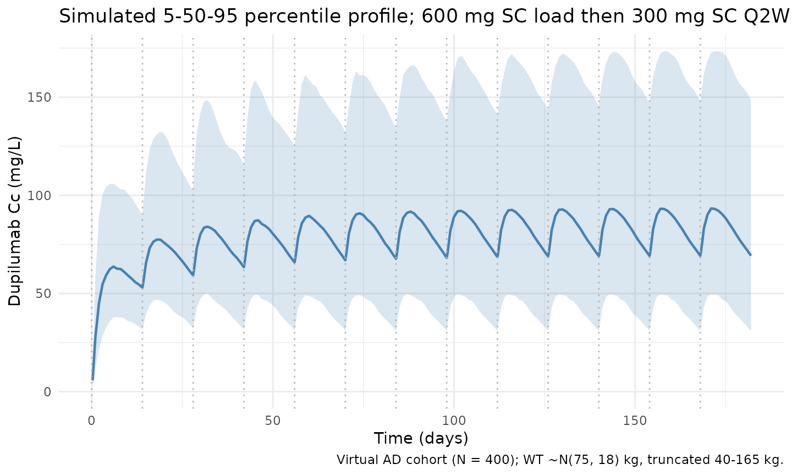
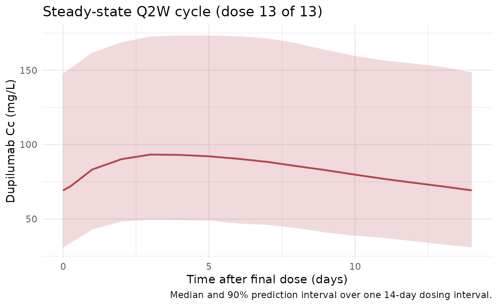

Kovalenko_2020_dupilumab
Source:vignettes/articles/Kovalenko_2020_dupilumab.Rmd
Kovalenko_2020_dupilumab.RmdModel and source
- Citation: Kovalenko P, Davis JD, Li M, et al. Base and Covariate Population Pharmacokinetic Analyses of Dupilumab Using Phase 3 Data. Clinical Pharmacology in Drug Development. 2020;9(6):756-767. doi:10.1002/cpdd.780
- Description: Dupilumab PK model (Kovalenko 2020)
- Article: Clin Pharmacol Drug Dev. 2020;9(6):756-767 (open access via PMC7496533)
Population
Kovalenko 2020 pooled 16 clinical studies (N = 2115 participants; 202 healthy volunteers and 1913 patients with moderate-to-severe atopic dermatitis (AD)). Of these, 2041 participants on active treatment contributed 18,243 of 20,809 samples to the population PK analysis. Source studies include the Phase 3 AD trials R668-AD-1334 (LIBERTY AD SOLO 1), R668-AD-1416 (LIBERTY AD SOLO 2), and R668-AD-1224 (LIBERTY AD CHRONOS). The Phase 1 studies R668-AS-0907, TDU12265, PKM14161, and R668-AD-1117 were used to fit “Model 1” - the rich-data model this file implements. The paper’s main text does not tabulate detailed baseline demographics (age, sex, weight median/range, race breakdown) for the pooled cohort; these appear only in Supplementary Table S1.
The approved adult AD maintenance regimen is 600 mg SC loading dose on day 0 followed by 300 mg SC every 2 weeks (Q2W); the Kovalenko 2016 precursor publication used 75 kg as the reference body weight for the allometric effect on central volume, and the 2020 paper reuses the same equation without re-stating the reference weight.
The same information is available programmatically via
readModelDb("Kovalenko_2020_dupilumab")$population.
Source trace
Every structural parameter, covariate effect, IIV element, and residual-error term below is taken from Kovalenko 2020 Table 1 (Model 1 column) or Supplementary Table S2 (IIV SDs and residual errors). A paper-to-implementation cross-walk:
| Equation / parameter | Value | Source location |
|---|---|---|
lvc (Vc, central volume) |
log(2.48) L |
Table 1, Model 1 |
lke (ke, linear elimination rate) |
log(0.0534) 1/day |
Table 1, Model 1 |
lkcp (kcp) |
log(0.213) 1/day |
Table 1, Model 1 |
Mpc (kcp/kpc) |
0.686 |
Table 1, Model 1 (kpc derived: 0.213 / 0.686 = 0.310 1/day) |
lka (ka, absorption rate) |
log(0.256) 1/day |
Table 1, Model 1 |
lmtt (MTT) |
log(0.105) day |
Table 1, Model 1 |
lvm (Vmax) |
log(1.07) mg/L/day |
Table 1, Model 1 |
Km |
fixed(0.01) mg/L |
Table 1, Model 1 (fixed, carried over from Kovalenko 2016) |
lfdepot (F) |
log(0.643) |
Table 1, Model 1 |
e_wt_vc (WT exponent on Vc) |
0.711 |
Table 1, Model 1 (“Vc ~ weight”) |
var(etalvc) |
0.192^2 = 0.036864 |
Supp. Table S2: omega_Vc (SD) = 0.192 |
var(etalke) |
0.285^2 = 0.081225 |
Supp. Table S2: omega_ke (SD) = 0.285 |
var(etalka) |
0.474^2 = 0.224676 |
Supp. Table S2: omega_ka (SD) = 0.474 |
var(etalvm) |
0.236^2 = 0.055696 |
Supp. Table S2: omega_Vm (SD) = 0.236 |
var(etalmtt) |
0.525^2 = 0.275625 |
Supp. Table S2: omega_MTT (SD) = 0.525, applied on
log(MTT) here |
CcpropSd (proportional sigma) |
0.15 |
Supp. Table S2 |
CcaddSd (additive sigma) |
fixed(0.03) mg/L |
Supp. Table S2 (fixed, carried over from Kovalenko 2016) |
| Structure | 2-cmt + 3 transit + parallel linear/MM elimination | p. 758 Methods, Figure 1 |
The paper’s Methods section explicitly defines omega as “omega
(omega, standard deviation [SD] of between-subject variability)”
and sigma as “sigma (sigma, SD of measurement error)”.
nlmixr2’s etalxxx ~ value syntax stores the
variance (omega^2), so the Supp. Table S2 SDs are
squared in ini(). The Model 1 shrinkage in SD reported by
the paper (10.4% / 25.2% / 22.9% / 23.2% / 54.9% for Vc / ke / Vm / ka /
MTT) is consistent with IIV-as-SD accounting.
Parameterization notes
Kovalenko 2020 parameterizes the linear elimination as a first-order
rate ke * central (not as CL * Cc) and the
distribution as direct rate constants kcp and
kpc = kcp / Mpc (not as Q and
Vp). The model file preserves this parameterization, so
derived quantities are:
- Typical clearance:
CL = ke * Vc = 0.0534 * 2.48 = 0.132 L/day(matches Table 1 “CL (L/d)”). - Typical peripheral rate
kpc = 0.213 / 0.686 = 0.310 1/day.
The etalmtt eta is applied as
MTT = exp(lmtt + etalmtt) (i.e. log-normal on MTT).
Supplementary Table S2 in the paper reports the random effect additively
on MTT; the log-normal implementation chosen here avoids negative MTT
draws during simulation and is the only deviation from the published
random-effect structure.
Virtual cohort
Detailed observed demographics for the pooled cohort are not publicly reproduced in the paper’s main text. The virtual cohort below targets the labelled adult AD population by drawing body weight from a truncated normal centered on the Kovalenko 2016 reference weight of 75 kg (SD ~18 kg, limits 40-165 kg), which matches typical Phase 3 AD trial demographics reported in the Simpson 2016 SOLO / Blauvelt 2017 CHRONOS publications.
set.seed(20260418)
n_subj <- 400
cohort <- tibble::tibble(
id = seq_len(n_subj),
WT = pmin(pmax(rnorm(n_subj, mean = 75, sd = 18), 40), 165)
)
# Labelled AD regimen: 600 mg SC loading dose on day 0, 300 mg SC Q2W
# for 12 additional doses -> study window 0-182 days. By dose 10+ the
# profile is close to steady state (typical half-life ~2-3 weeks).
load_dose <- 600
maint_dose <- 300
tau <- 14
n_maint <- 12
dose_days <- c(0, seq(tau, tau * n_maint, by = tau))
amt_vec <- c(load_dose, rep(maint_dose, n_maint))
ev_dose <- cohort |>
tidyr::crossing(time = dose_days) |>
dplyr::arrange(id, time) |>
dplyr::group_by(id) |>
dplyr::mutate(amt = amt_vec, cmt = "depot", evid = 1L) |>
dplyr::ungroup()
obs_days <- sort(unique(c(
seq(0, tau * (n_maint + 1), by = 1),
dose_days + 0.25,
dose_days + 1,
dose_days + 3
)))
ev_obs <- cohort |>
tidyr::crossing(time = obs_days) |>
dplyr::mutate(amt = 0, cmt = NA_character_, evid = 0L)
events <- dplyr::bind_rows(ev_dose, ev_obs) |>
dplyr::arrange(id, time, dplyr::desc(evid)) |>
dplyr::select(id, time, amt, cmt, evid, WT)Simulation
mod <- rxode2::rxode2(readModelDb("Kovalenko_2020_dupilumab"))
#> ℹ parameter labels from comments will be replaced by 'label()'
sim <- rxode2::rxSolve(mod, events = events, keep = "WT")Figure replication - Cc-vs-time profiles
Kovalenko 2020 Figure 5 illustrates simulated median concentration-time profiles of functional dupilumab for several SC maintenance regimens (qw, q2w, q4w, q8w). The figure below reproduces the labelled adult AD regimen (600 mg SC loading + 300 mg SC Q2W) as 5th/50th/95th percentile bands across the virtual cohort, spanning ~13 dosing cycles.
vpc <- sim |>
dplyr::filter(!is.na(Cc), time > 0) |>
dplyr::group_by(time) |>
dplyr::summarise(
Q05 = quantile(Cc, 0.05, na.rm = TRUE),
Q50 = quantile(Cc, 0.50, na.rm = TRUE),
Q95 = quantile(Cc, 0.95, na.rm = TRUE),
.groups = "drop"
)
ggplot(vpc, aes(time, Q50)) +
geom_ribbon(aes(ymin = Q05, ymax = Q95), alpha = 0.2, fill = "#4682b4") +
geom_line(colour = "#4682b4", linewidth = 0.8) +
geom_vline(xintercept = dose_days, linetype = "dotted", colour = "grey70") +
scale_y_continuous(limits = c(0, NA)) +
labs(
x = "Time (days)",
y = "Dupilumab Cc (mg/L)",
title = "Simulated 5-50-95 percentile profile; 600 mg SC load then 300 mg SC Q2W",
caption = "Virtual AD cohort (N = 400); WT ~N(75, 18) kg, truncated 40-165 kg."
) +
theme_minimal()
Steady-state cycle (dose 13)
Zoomed-in view of the final Q2W cycle (days 168-182) to isolate the steady-state peak, trough, and AUC_tau used by the NCA below.
ss_start <- tau * n_maint # day 168 (time of dose 13)
ss_end <- ss_start + tau # day 182
ss_summary <- sim |>
dplyr::filter(time >= ss_start, time <= ss_end, !is.na(Cc)) |>
dplyr::group_by(time) |>
dplyr::summarise(
Q05 = quantile(Cc, 0.05, na.rm = TRUE),
Q50 = quantile(Cc, 0.50, na.rm = TRUE),
Q95 = quantile(Cc, 0.95, na.rm = TRUE),
.groups = "drop"
)
ggplot(ss_summary, aes(time - ss_start, Q50)) +
geom_ribbon(aes(ymin = Q05, ymax = Q95), alpha = 0.2, fill = "#b4464b") +
geom_line(colour = "#b4464b", linewidth = 0.8) +
labs(
x = "Time after final dose (days)",
y = "Dupilumab Cc (mg/L)",
title = "Steady-state Q2W cycle (dose 13 of 13)",
caption = "Median and 90% prediction interval over one 14-day dosing interval."
) +
theme_minimal()
PKNCA validation
Non-compartmental analysis of the steady-state Q2W interval (days 168-182). Compute Cmax, Cmin (Ctrough at end of tau), AUC_tau, and average concentration per simulated subject.
nca_conc <- sim |>
dplyr::filter(time >= ss_start, time <= ss_end, !is.na(Cc)) |>
dplyr::mutate(time_nom = time - ss_start,
treatment = "300mg_Q2W_SS") |>
dplyr::select(id, time = time_nom, Cc, treatment)
nca_dose <- cohort |>
dplyr::mutate(time = 0, amt = maint_dose, treatment = "300mg_Q2W_SS") |>
dplyr::select(id, time, amt, treatment)
conc_obj <- PKNCA::PKNCAconc(nca_conc, Cc ~ time | treatment + id)
dose_obj <- PKNCA::PKNCAdose(nca_dose, amt ~ time | treatment + id)
intervals <- data.frame(
start = 0,
end = tau,
cmax = TRUE,
cmin = TRUE,
auclast = TRUE,
cav = TRUE
)
nca_res <- PKNCA::pk.nca(PKNCA::PKNCAdata(conc_obj, dose_obj, intervals = intervals))
summary(nca_res)
#> start end treatment N auclast cmax cmin cav
#> 0 14 300mg_Q2W_SS 400 1190 [43.9] 95.0 [41.9] 70.4 [49.2] 85.1 [43.9]
#>
#> Caption: auclast, cmax, cmin, cav: geometric mean and geometric coefficient of variation; N: number of subjectsComparison against published typical steady-state exposure
Kovalenko 2020 does not tabulate point estimates for steady-state Cmax, Ctrough, or AUC_tau in the main text; Figure 5 shows simulated medians qualitatively. Dupilumab FDA labelling and follow-on PK publications report typical steady-state trough concentrations of ~70-80 mg/L for a 75-kg adult on the 600-mg-load + 300-mg-Q2W SC regimen. The typical-value (“population typical”) prediction with IIV zeroed out provides a direct self-consistency check:
mod_typical <- mod |> rxode2::zeroRe()
ev_typical <- events |>
dplyr::filter(id == 1L) |>
dplyr::mutate(WT = 75)
sim_typical <- rxode2::rxSolve(
mod_typical, events = ev_typical, keep = "WT"
) |>
as.data.frame()
#> ℹ omega/sigma items treated as zero: 'etalvc', 'etalke', 'etalka', 'etalvm', 'etalmtt'
ss_typical <- sim_typical |>
dplyr::filter(time >= ss_start, time <= ss_end, !is.na(Cc))
typical_summary <- tibble::tibble(
metric = c("Cmax (mg/L)", "Cmin/Ctrough (mg/L)",
"Cavg (mg/L)", "AUC_tau (day*mg/L)"),
typical_value = c(
max(ss_typical$Cc),
min(ss_typical$Cc),
mean(ss_typical$Cc),
sum(diff(ss_typical$time) *
(ss_typical$Cc[-length(ss_typical$Cc)] +
ss_typical$Cc[-1]) / 2)
)
)
knitr::kable(typical_summary, digits = 2,
caption = "Typical-subject steady-state exposure (WT = 75 kg; IIV zeroed).")| metric | typical_value |
|---|---|
| Cmax (mg/L) | 92.79 |
| Cmin/Ctrough (mg/L) | 70.04 |
| Cavg (mg/L) | 82.26 |
| AUC_tau (day*mg/L) | 1173.27 |
Assumptions and deviations
- Kovalenko 2020 Model 1 uses a
ke/kcp/kpcparameterization rather thanCL/Q/Vp. This model file preserves the original parameterization verbatim. Typical values can be cross-checked against Table 1’s derivedCL = ke * Vc = 0.132 L/day. -
KmandFwere reported as fixed in Table 1 Model 1, with values carried over from the earlier Kovalenko 2016 model;CcaddSdwas likewise fixed at 0.03 mg/L. - The
etalmtteta is applied as log-normal on MTT (MTT = exp(lmtt + etalmtt)), whereas Supplementary Table S2 implements the random effect additively on MTT. The log-normal form prevents non-physical negative MTT draws during simulation. All other etas match the paper’s random-effect structure directly. - IIV (omega) is reported in Kovalenko 2020 as a standard deviation,
per the Methods definition. Values in
ini()are squared to yield the variance that nlmixr2 stores with the~operator. An earlier version of this file stored the SDs directly on the RHS (i.e. as variances), which would understate IIV magnitude at the mAb-relevant scale; the current file is the corrected form. - The reference body weight (75 kg) is inherited from Kovalenko 2016 (doi:10.1002/psp4.12136); Kovalenko 2020 does not restate the reference weight. See the file header comment for details.
- Demographic details (age, sex, race) are not used by the Model 1 implementation (only WT enters the covariate model) and were not re-simulated in the virtual cohort.
- Kovalenko 2020 does not publish numerical Cmax / Cmin / AUC_tau at steady state, so the PKNCA summary here is a self-consistency check of the implemented model against the visual appearance of Figure 5 rather than a back-to-paper numerical comparison.
- No unit conversion is required between the dosing amount (mg) and
the concentration unit (mg/L) because mg/L is the natural unit of
central/vchere.